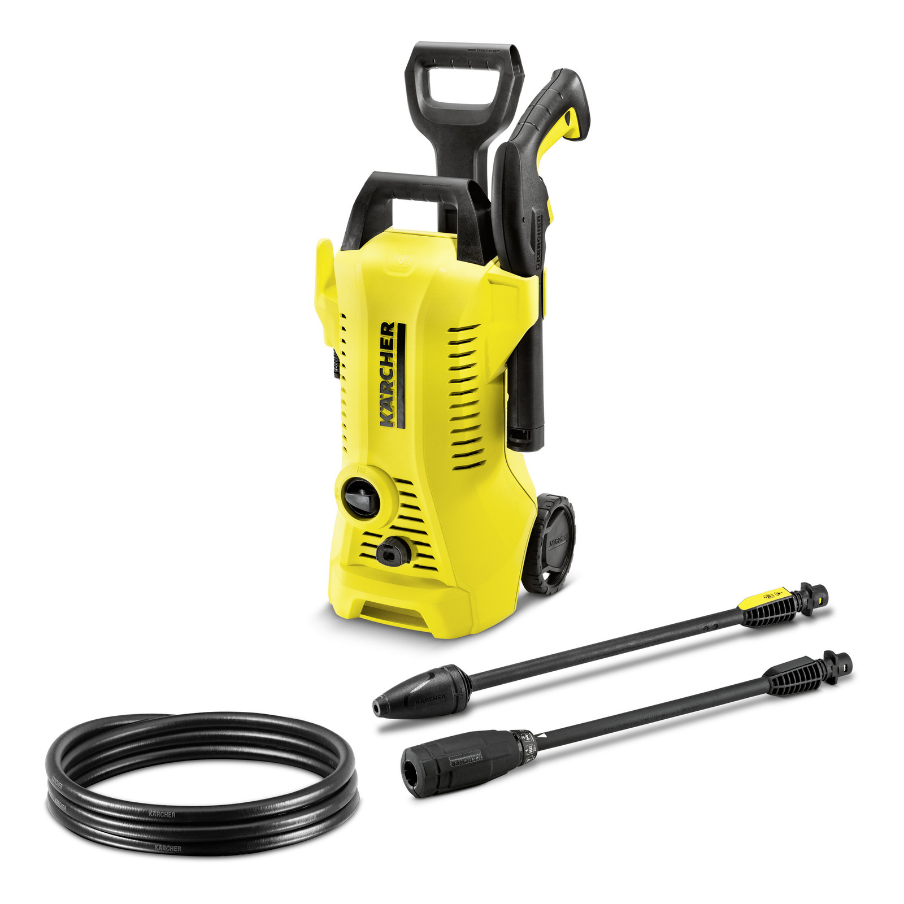
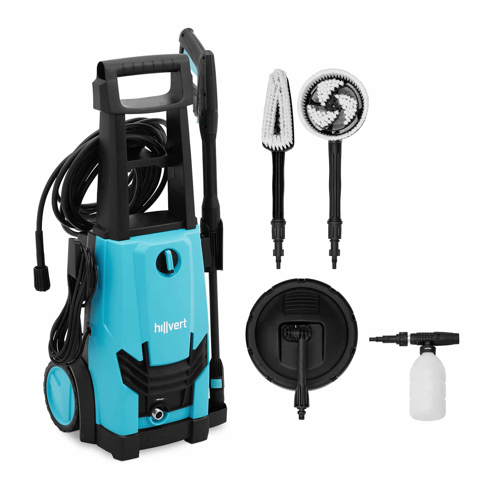

|  | Kärcher K 2 Power Control magasnyomású mosó Miért ez a szerszám? A Kärcher Home & Garden mobil alkalmazás segítségével praktikus tippek, olyan hasznos funkciók vannak, mint a felhasználási tanácsadó a hatékonyabb tisztításhoz, a szerelési útmutatók valamint karbantartási és ápolási instrukciók. A készülék egy magasnyomású pisztollyal és 2 db Quick Connect adapterrel ellátott szórószárral van felszerelve. A nyomásszint közvetlenül a Click Vario Power szórószáron állítható be - a maximális kontroll érdekében, valamennyi tisztítási feladathoz. A készülék állítható magasságú teleszkópos fogantyúval rendelkezik így kényelmesen szállítható és tárolható. |
|
|  | Hillvert Magasnyomású mosó - 2200 W Miért ez a szerszám? Nagy teljesítményű – 2200 W-os teljesítményével legfeljebb 150 bar nyomást és 7,5 l/perc szállítási sebességet generál Állítható – a tisztítási nyomás a fúvókán keresztül 0°, 25° és 40°-ban, valamint a tisztítószerrel és egy további turbófúvókával állíható be az aktuális igényeknek megfelelően Mobil – kényelmes munkavégzés a 10 m hosszú tömlőnek és a nagy kerekeknek köszönhetően Praktikus – mosószertartállyal, automatikus leállítással és önfelszívó funkcióval Tartós – a robusztus nagynyomású szivattyúnak és a kiváló minőségű háznak köszönhetően |
|